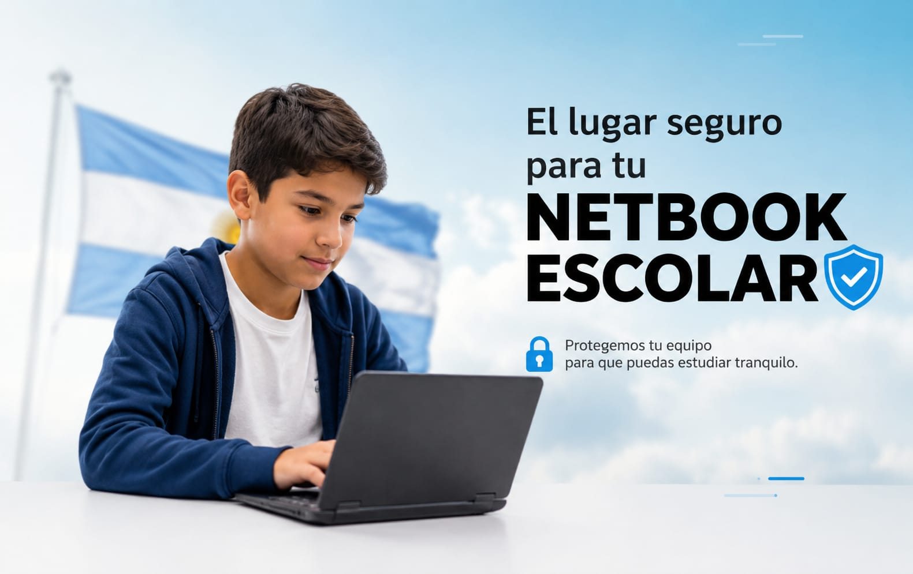

Gestión Digital de Netbooks Escolares
Realizá solicitudes de desbloqueo, pedidos de nuevas netbooks y seguimiento de trámites desde una única plataforma.
Una vez finalizado el proceso podrás descargar tu comprobante digital para presentarlo ante la institución correspondiente.
RETIRAR COMPROBANTE🔓 Desbloqueo de Netbooks
Iniciá el proceso de desbloqueo de tu equipo escolar mediante la carga del código de hardware y la documentación requerida.
INICIAR TRÁMITE💻 Solicitud de Nueva Netbook
Gestioná la solicitud de una nueva computadora escolar. El sistema verificará automáticamente la existencia de equipos asignados.
REALIZAR SOLICITUD🔍 Consulta de Netbook Asignada
Consultá si tenés una netbook asignada en el sistema y verificá la información necesaria para solicitar un nuevo equipo en caso de ser requerido.
VERIFICAR EQUIPO